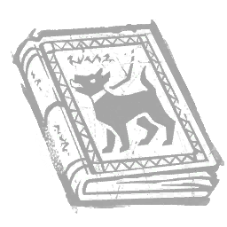
Crescer Fera
Peso
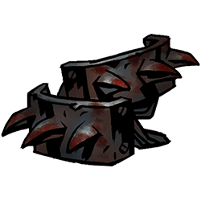
Estímulo da Dor
Ódio-Ferocidade
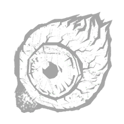
Observar Alma
Alma
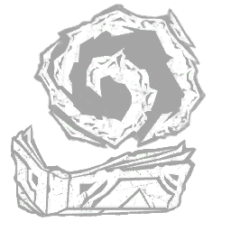
Criar Fenda
Peso-Vida
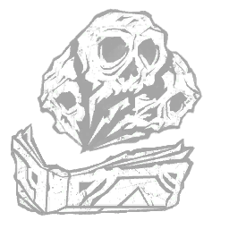
Necromancia
Morte-Vida
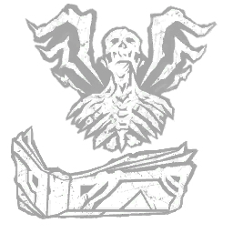
Voar aos Céus
Peso-Liberdade
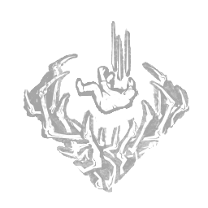
Queda Mortal
Peso-Morte
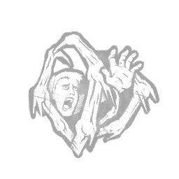
Abraço de Carne
Luta-Medo
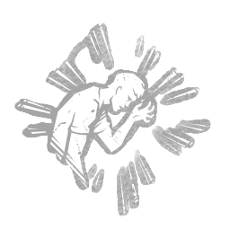
Comando Mental
Medo-Código

Perseguir no Oculto
Medo-Luta
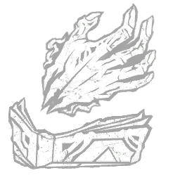
Perturbar Forma
Vida-Peso
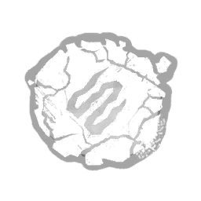
Alongar
Peso-Vida
Pézinho de Ar
Liberdade-Peso
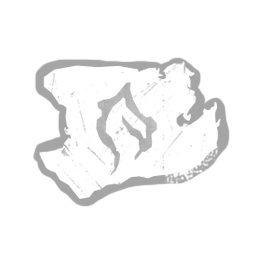
Queimar Alma
Fogo-Alma
Queimar Cicatrizes
Fogo-Vida
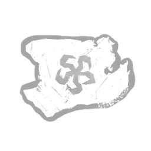
Vazio em Alma
Esquecer-Alma
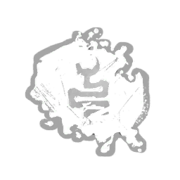
Enfraquecer Sangue
Apodrecer-Vida
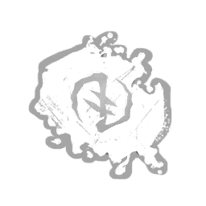
Retalhar
Luta-Mover
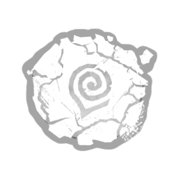
Espiral de Agonia
Ciclo-Apodrecer
Converter
Luta-Código
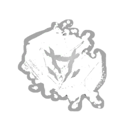
Trovejar
Liberdade-Luta
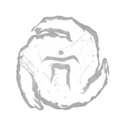
Revelar Alma
Código-Alma
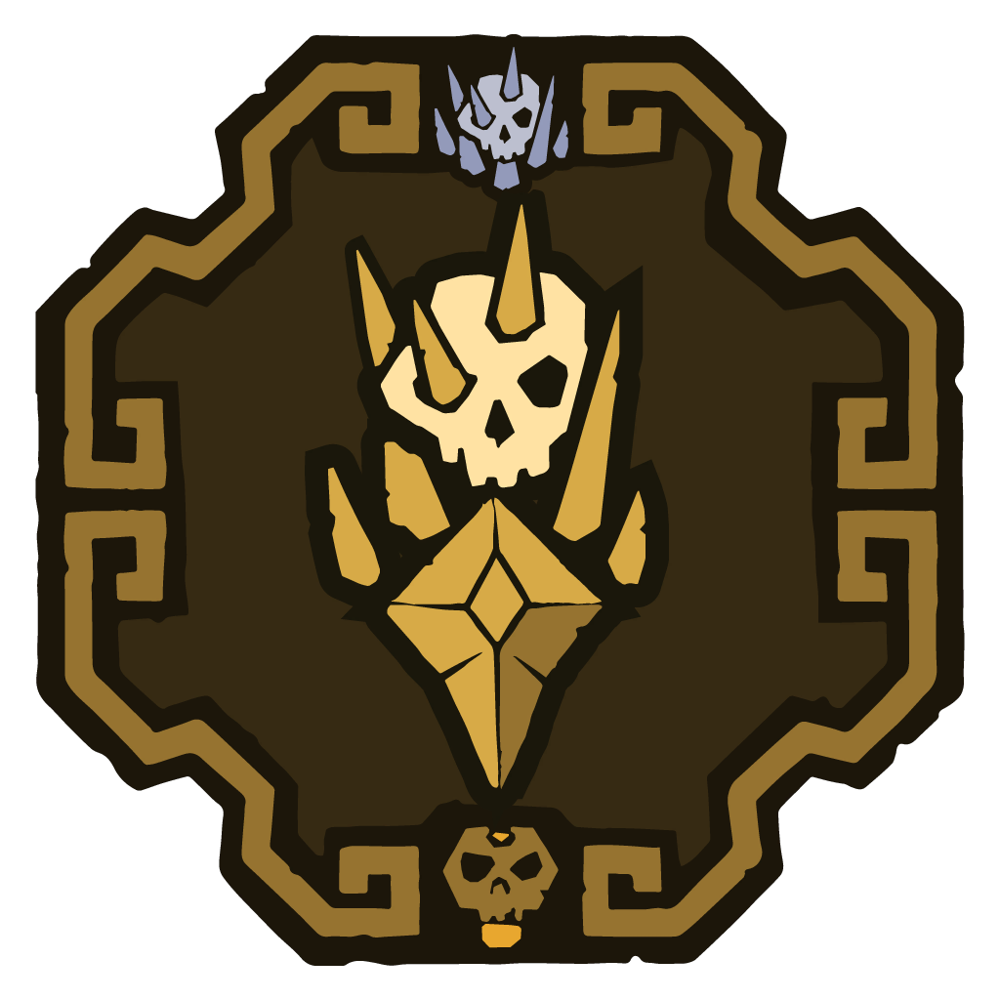
Bifurcar
Peso-Luta
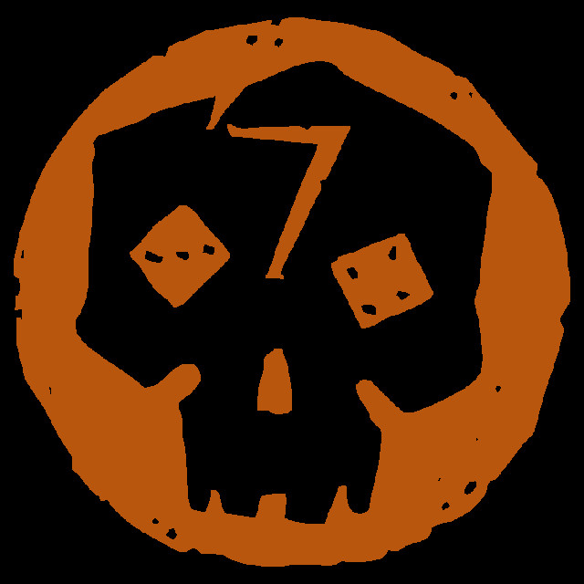
Derrotar
Medo-Luta
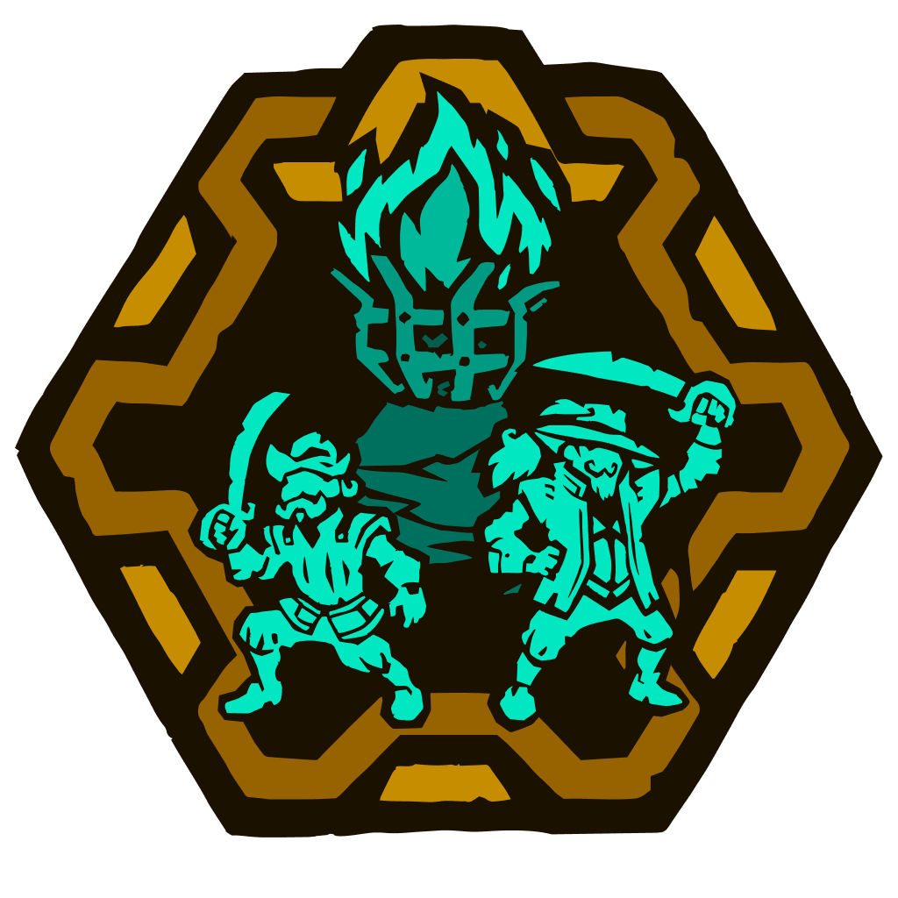
Cantiga do Véu
Luta-Liberdade